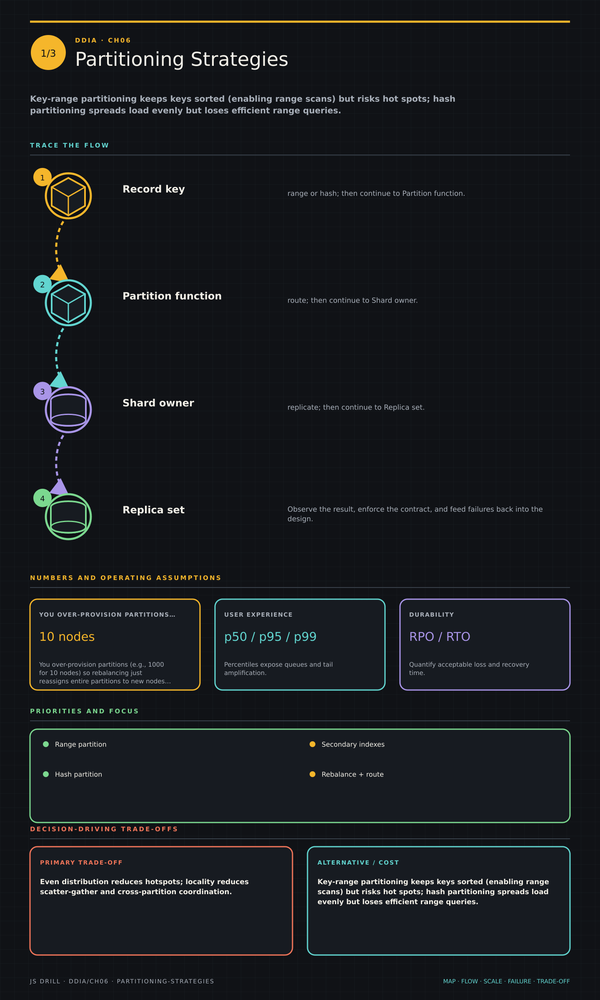

https://frosty110.github.io/js-drill/assets/system-design/infographics/ddia/ch06/partitioning-strategies.pngHow to break a large dataset into partitions (shards) spread across many nodes for scalability, how to choose a partitioning scheme, keep it balanced as the cluster grows, and route requests to the right partition.
All questions, model answers and diagrams for Partitioning →